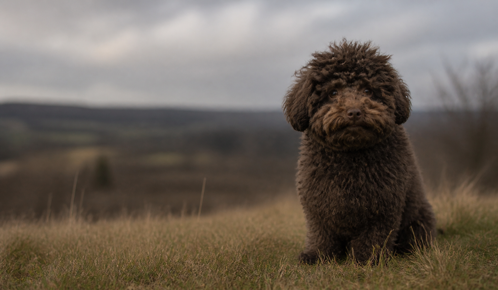
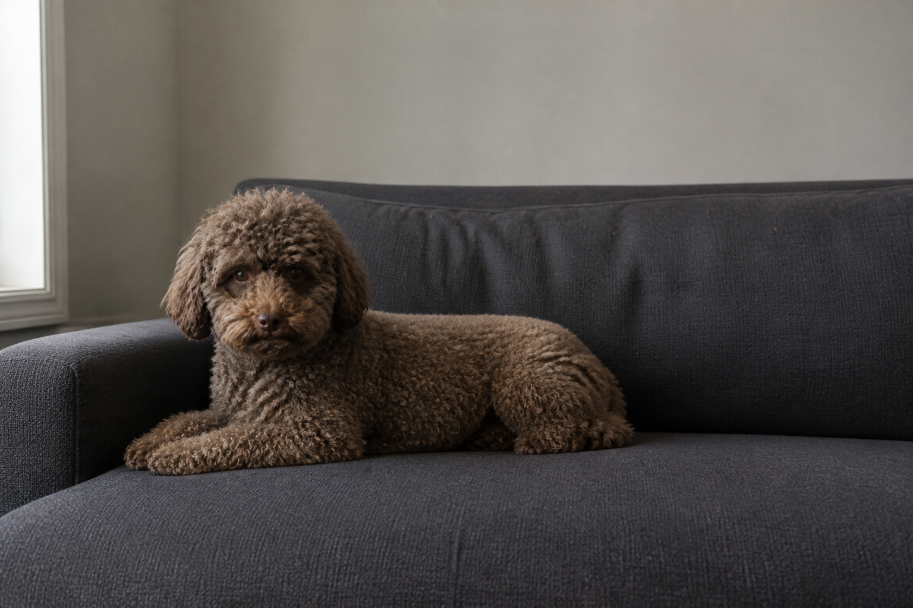

Poppy Stories
Poppy Stories
Short sequences from Poppy’s life, told through image and observation.
Story 01 · Three frames
The Open Field
A new landscape is approached through pause, assessment, and movement.

Story 02 · Three views
Where to Rest
The decision depends on comfort, visibility, and a clear understanding of the room.
